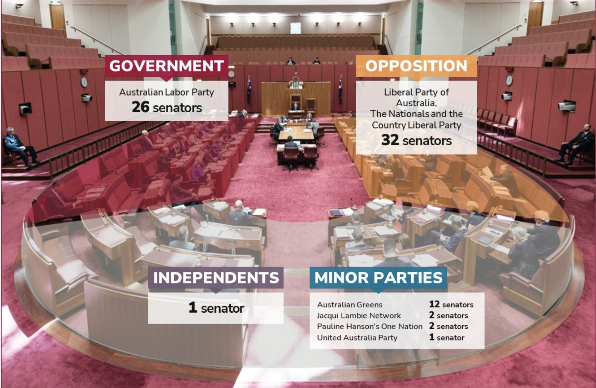
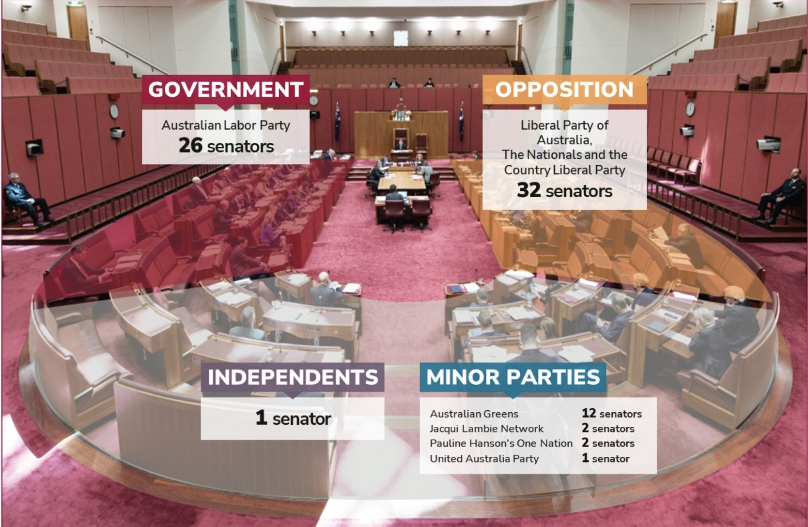

The Senate's colour is inspired from the House of Lords in the British Parliment as well and the light red colours are from the colours of the desert landscape of Australia.
The U-shape of the Senate is different to the House because in the Middle is the President of the Senate The Honourable Sue Lines and around her are the 76 senators, on her right side there are the Government Senators and on her left side are the Opposition Senators, then the Leader of the Government in the Senate and the Leader of the Opposition in the Senate sit at a table in the centre.
 
